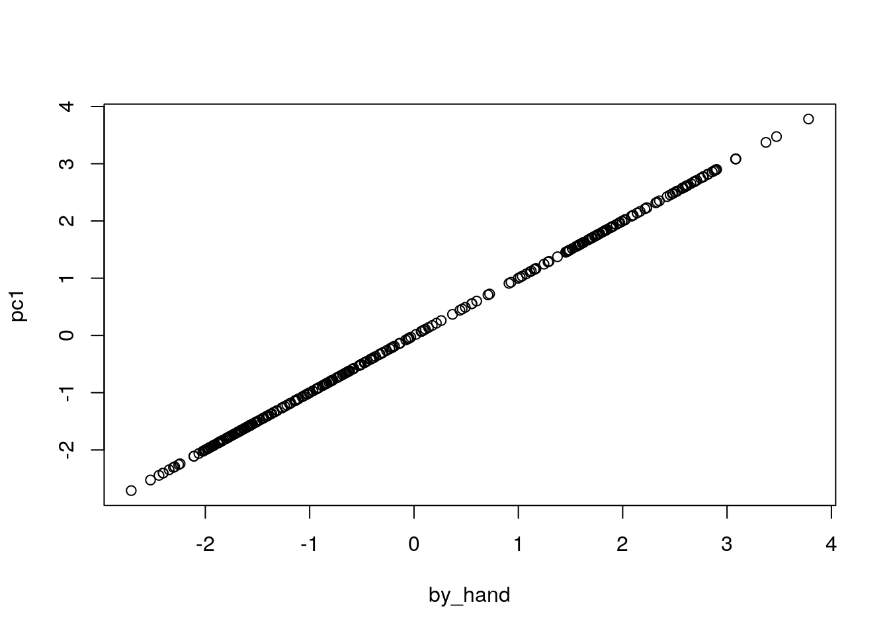
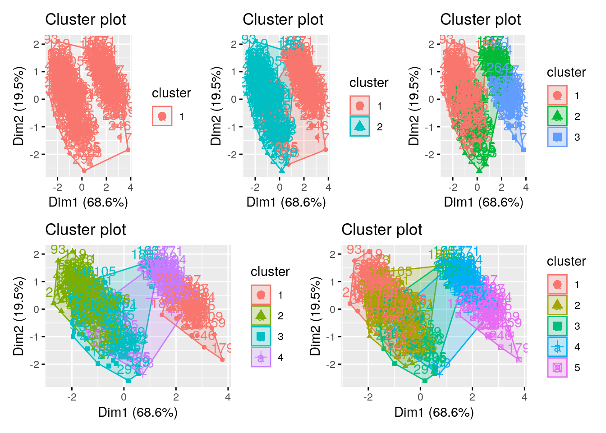
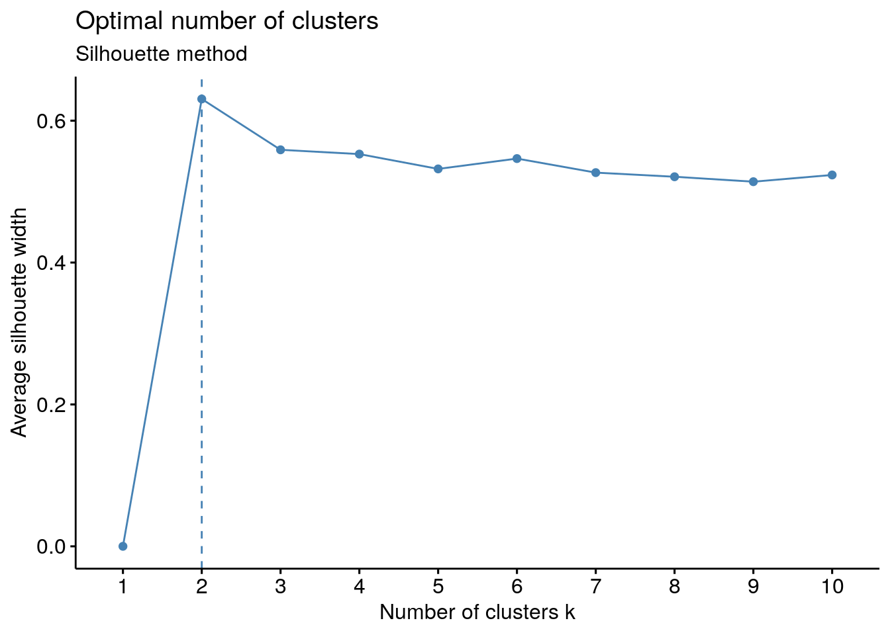
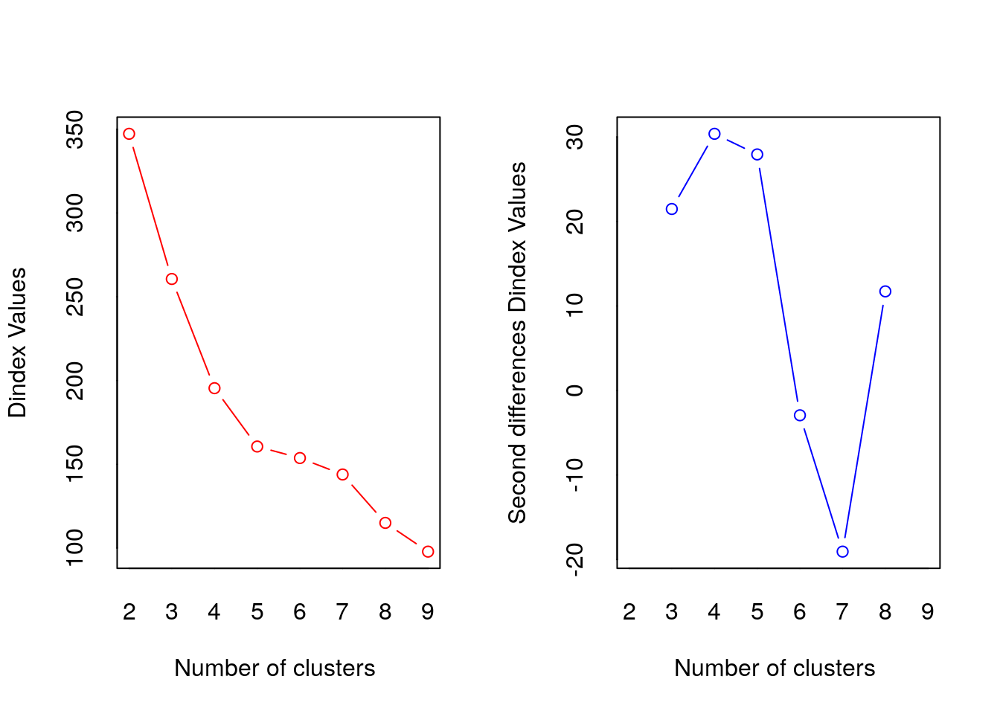
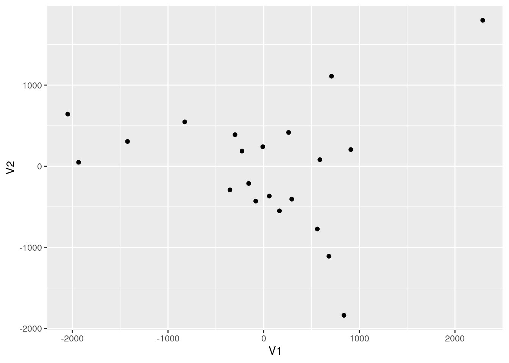

6 Multivariate Data Methods
6.1 Learning Objectives
- Explain the aims and motivation behind Principal Component Analysis (PCA) and its relevance in biology
- Explain the aims and motivation behind cluster analysis and its relevance in biology
- Write
Rcode to carry out PCA - Interpret the effectively communicate the output of PCA
- Assess how many principal components are needed
- Interpret principal component scores and describe a subject with a high or low score
- Write
Rcode to carry out k-means cluster analysis - Interpret
Routput from PCA and k-means cluster analysis - Interpret and communicate, to both a statistical and non-statistical audience, multivariate data techniques, specifically,
- PCA
- k-means clustering
6.2 Dimension reduction
Reduction of dimensions is needed when there are far too many features in a dataset, making it hard to distinguish between the important ones that are relevant to the output and the redundant or not-so important ones. Reducing the dimensions of data is called dimensionality reduction.
So the aim is to find the best low-dimensional representation of the variation in a multivariate (lots and lots of variables) data set, but how do we do this?
One way is termed Principal Component Analysis (PCA). PCA is a feature extraction method that reduces the dimensionality of the data (number of variables) by creating new uncorrelated variables while minimizing loss of information on the original variables.
Think of a baguette. The baguette pictured here represents two data dimensions: 1) the length of the bread and 2) the height of the bread (we'll ignore depth of bread for now). Think of the baguette as your data; when we carry out PCA we're rotating our original axes (x- and y-coordinates) to capture as much of the variation in our data as possible. This results in new uncorrelated variables that each explain a % of variation in our data; the procedure is designed so that the first new variable (PC1) explains the most, the second (PC2) the second most and so on.

Now rather than a baguette think of data; the baguette above represent the shape of the scatter between the two variables plotted below. The rotating grey axes represent the PCA procedure, essentially searching for the best rotation of the original axes to represent the variation in the data as best it can. Mathematically the Euclidean distance (e.g., the distance between points \(p\) and \(q\) in Euclidean space, \(\sqrt{(p-q)^2}\)) between the points and the rotating axes is being minimized (i.e., the shortest possible across all points), see the blue lines. Once this distance is minimized across all points we "settle" on our new axes (the black tiled axes).

Luckily we can do this all in R!
6.2.1 PCA in R
Using the palmerpenguins data
## we should be used to loading these packages by now :-)
library(tidyverse)
library(palmerpenguins)
## getting rid of NAs
penguins_nafree <- penguins %>% drop_na()When carrying out PCA we're only interested in numeric variables, so let's just plot those. We can use the piping operator %>% to do this with out creating a new data frame
## introducing a new package GGally, please install
## using install.packages("GGally")
library(GGally)
penguins_nafree %>%
select(species, where(is.numeric)) %>%
ggpairs(aes(color = species),
columns = c("flipper_length_mm", "body_mass_g",
"bill_length_mm", "bill_depth_mm")) Using prcomp()
There are three basic types of information we obtain from Principal Component Analysis:
PC scores: the coordinates of our samples on the new PC axis: the new uncorrelated variables (stored in
pca$x)Eigenvalues: (see above) represent the variance explained by each PC; we can use these to calculate the proportion of variance in the original data that each axis explains
Variable loadings (eigenvectors): these reflect the weight that each variable has on a particular PC and can be thought of as the correlation between the PC and the original variable
Before we carry out PCA we should scale out data. WHY?
pca <- penguins_nafree %>%
select(where(is.numeric), -year) %>% ## year makes no sense here so we remove it and keep the other numeric variables
scale() %>% ## scale the variables
prcomp()
## print out a summary
summary(pca)## Importance of components:
## PC1 PC2 PC3 PC4
## Standard deviation 1.6569 0.8821 0.60716 0.32846
## Proportion of Variance 0.6863 0.1945 0.09216 0.02697
## Cumulative Proportion 0.6863 0.8809 0.97303 1.00000This output tells us that we obtain 4 principal components, which are called PC1 PC2, PC3, and PC4 (this is as expected because we used the 4 original numeric variables!). Each of these PCs explains a percentage of the total variation (Proportion of Variance) in the dataset:
PC1explains \(\sim\) 68% of the total variance, which means that just over half of the information in the dataset (5 variables) can be encapsulated by just that one Principal Component.PC2explains \(\sim\) 19% of the variance.PC3explains \(\sim\) 9% of the variance.PC4explains \(\sim\) 2% of the variance.
From the Cumulative Proportion row we see that by knowing the position of a sample in relation to just PC1 and PC2 we can get a pretty accurate view on where it stands in relation to other samples, as just PC1 and PC2 explain 88% of the variance.
The loadings (relationship) between the initial variables and the principal components are stored in pca$rotation:
pca$rotation## PC1 PC2 PC3 PC4
## bill_length_mm 0.4537532 -0.60019490 -0.6424951 0.1451695
## bill_depth_mm -0.3990472 -0.79616951 0.4258004 -0.1599044
## flipper_length_mm 0.5768250 -0.00578817 0.2360952 -0.7819837
## body_mass_g 0.5496747 -0.07646366 0.5917374 0.5846861Here we can see that bill_length_mm has a strong positive relationship with PC1, whereas bill_depth_mm has a strong negative relationship. Both fliper_length_mm and body_mass_g also have a strong positive relationship with PC1.
Plotting this we get
The new variables (PCs) are stored in pca$x, lets plot some of them alongside the loadings using a biplot. For PC1 vs PC2:
library(factoextra) ## install this package first
fviz_pca_biplot(pca, geom = "point") +
geom_point (alpha = 0.2)Now for PC2 vs PC3
fviz_pca_biplot(pca, axes = c(2,3),geom = "point") +
geom_point (alpha = 0.2)But how many PCs (new variables) do we keep? The whole point of this exercise is to reduce the number of variables we need to explain the variation in our data. So how many of these new variables (PCs) do we keep?
To assess this we can use the information printed above alongside a screeplot:
fviz_screeplot(pca)6.2.2 Principal components from the original variables
Recall that the principal components are a linear combination of the (statndardised) variables. So for PC1
loadings1 <- pca$rotation[,1]
loadings1## bill_length_mm bill_depth_mm flipper_length_mm body_mass_g
## 0.4537532 -0.3990472 0.5768250 0.5496747Therefore, the first Principle Component will be \(0.454\times Z1 -0.399 \times Z2 + 0.5768 \times Z3 + 0.5497 \times Z3\) where \(Z1\), \(Z2\), \(Z3\). and \(Z4\) are the scaled numerical variables form the penguins dataset (i.e., bill_length_mm, bill_depth_mm, flipper_length_mm, body_mass_g). To compute this we use R:
scaled_vars <- penguins_nafree %>%
select(where(is.numeric), -year) %>%
scale() %>%
as_tibble()
## By "Hand"
by_hand <- loadings1[1]*scaled_vars$"bill_length_mm" +
loadings1[2]*scaled_vars$"bill_depth_mm" +
loadings1[3]*scaled_vars$"flipper_length_mm" +
loadings1[4]*scaled_vars$"body_mass_g"
## From PCA
pc1 <- pca$x[,1]
plot(by_hand,pc1)
6.3 Clustering
So, it's all about variation again! And the idea of minimizing it.
K-means clustering involves defining clusters so that the overall variation within a cluster (known as total within-cluster variation) is minimized. How do we define this variation? Typically, using Euclidean distances; the total within-cluster variation, is in this case, is defined as the sum of squared distances Euclidean distances between observations and the corresponding cluster centroid.
In summary, this is the procedure
- The number of clusters (k) are specified
- k objects from the dataset are selected at random and set as the initial cluster centers or means
- Each observation is assigned to their closest centroid (based on the Euclidean distance between the object and the centroid)
- For each of the k clusters the cluster centroid is then updated based on calculating the new mean values of all the data points in the cluster
- Repeat the two previous steps until 1) the cluster assignments stop changing or 2) the maximum number of iterations is reached
Identify optimal number of clusters
Identifying the appropriate k is important because too many or too few clusters impedes viewing overall trends. Too many clusters can lead to over-fitting (which limits generalizations) while insufficient clusters limits insights into commonality of groups.
There are assorted methodologies to identify the appropriate \(k\). Tests range from blunt visual inspections to robust algorithms. The optimal number of clusters is ultimately a subjective decision.
6.3.1 K-means in R using factoextra
## library for k-means clustering, will need to install first
library(factoextra)
df <- penguins_nafree %>%
select(where(is.numeric), -year)We use the kmeans() function from the factoextra package.
The first argument of kmeans() should be the dataset you wish to cluster. Below we use data frame df, the penguin data discussed above. But how many clusters do we choose? Let's try 1 to 5... (i.e., using the centers argument). Setting nstart = 25 means that R will try 25 different random starting assignments and then select the best results corresponding to the one with the lowest within cluster variation.
## set the seed so we all start off in the same place
set.seed(4321)
## one cluster
k1 <- kmeans(df, centers = 1, nstart = 25)
## two clusters
k2 <- kmeans(df, centers = 2, nstart = 25)
## three clusters
k3 <- kmeans(df, centers = 3, nstart = 25)
## four clusters
k4 <- kmeans(df, centers = 4, nstart = 25)
## five clusters
k5 <- kmeans(df, centers = 5, nstart = 25)The kmeans() function returns a list of components:
cluster, integers indicating the cluster to which each observation is allocatedcenters, a matrix of cluster centers/meanstotss, the total sum of squareswithinss, within-cluster sum of squares, one component per clustertot.withinss, total within-cluster sum of squaresbetweenss, between-cluster sum of squaressize, number of observations in each cluster
6.3.1.1 Choosing the number of clusters
We have an idea there may be 3 clusters, perhaps, but how do we know this is the best fit? Remember its a subjective choice and we'll be looking at a few pointers
Visual inspection method
p1 <- fviz_cluster(k1, data = df)
p2 <- fviz_cluster(k2, data = df)
p3 <- fviz_cluster(k3, data = df)
p4 <- fviz_cluster(k4, data = df)
p5 <- fviz_cluster(k5, data = df)
## for arranging plots
library(patchwork)
(p1| p2| p3)/ (p4 | p5)
Alternatively, you can use standard pairwise scatter plots to illustrate the clusters compared to the original variables.
df %>%
mutate(cluster = k3$cluster,
species = penguins_nafree$species) %>%
ggplot(aes(flipper_length_mm, bill_depth_mm, color = factor(cluster), label = species)) +
geom_text()Elbow method
Optimal clusters are at the point in which the knee "bends" or in mathematical terms when the marginal total within sum of squares (tot.withinss) for an additional cluster begins to decrease at a linear rate
This is easier to see via a plot:
fviz_nbclust(df, kmeans, method = "wss") +
labs(subtitle = "Elbow method")
There is a pretty obvious inflection (elbow) at 2 clusters, but maybe at 3 too. We can rule out an optimal number of clusters above 3 as there is then only a minimal marginal reduction in total within sum of squares. However, the model is ambiguous on whether 2 or 3 clusters is optimal...
Silhouette method
# Silhouette method
fviz_nbclust(df, kmeans, method = "silhouette")+
labs(subtitle = "Silhouette method")
Gap method
# Gap statistic
# recommended value: nboot = 500 for your analysis (it will take a while)
set.seed(123) ## remove this
fviz_nbclust(df, kmeans, nstart = 25, method = "gap_stat", nboot = 50)+
labs(subtitle = "Gap statistic method")Basically it's up to you to collate all the suggestions and make and informed decision
## Trying all the cluster indecies AHHHHH
library(NbClust)
cluster_30_indexes <- NbClust(data = df, distance = "euclidean", min.nc = 2, max.nc = 9, method = "complete", index ="all")## *** : The Hubert index is a graphical method of determining the number of clusters.
## In the plot of Hubert index, we seek a significant knee that corresponds to a
## significant increase of the value of the measure i.e the significant peak in Hubert
## index second differences plot.
## 
## *** : The D index is a graphical method of determining the number of clusters.
## In the plot of D index, we seek a significant knee (the significant peak in Dindex
## second differences plot) that corresponds to a significant increase of the value of
## the measure.
##
## *******************************************************************
## * Among all indices:
## * 5 proposed 2 as the best number of clusters
## * 6 proposed 3 as the best number of clusters
## * 1 proposed 4 as the best number of clusters
## * 4 proposed 5 as the best number of clusters
## * 1 proposed 8 as the best number of clusters
## * 3 proposed 9 as the best number of clusters
##
## ***** Conclusion *****
##
## * According to the majority rule, the best number of clusters is 3
##
##
## *******************************************************************fviz_nbclust(cluster_30_indexes) +
theme_minimal() +
labs(title = "Frequency of Optimal Clusters using 30 indexes in NbClust Package")## Among all indices:
## ===================
## * 2 proposed 0 as the best number of clusters
## * 1 proposed 1 as the best number of clusters
## * 5 proposed 2 as the best number of clusters
## * 6 proposed 3 as the best number of clusters
## * 1 proposed 4 as the best number of clusters
## * 4 proposed 5 as the best number of clusters
## * 1 proposed 8 as the best number of clusters
## * 3 proposed 9 as the best number of clusters
## * 3 proposed NA's as the best number of clusters
##
## Conclusion
## =========================
## * According to the majority rule, the best number of clusters is 3 .Not obvious, basically still undecided between 2 and 3, but according to the absolute majority rule the "best" number is 3


6.5 Other resources: optional but recommended
'explor' is an R package to allow interactive exploration of multivariate analysis results
The Mathematics Behind Principal Component Analysis (6 min read)
6.5.1 Multidimensional Scaling in R (not examinable)
Multidimensional scaling (MDS) is actually the more general technique of dimension reduction. PCA is a special case of MDS!
To carry out MDS in R
library(ggfortify)
## Plotting Multidimensional Scaling (for interest)
## stats::cmdscale performs Classical MDS
data("eurodist") ## road distances (in km) between 21 cities in Europe.
autoplot(eurodist)## Plotting Classical (Metric) Multidimensional Scaling
autoplot(cmdscale(eurodist, eig = TRUE))
autoplot(cmdscale(eurodist, eig = TRUE), label = TRUE, shape = FALSE,
label.size = 3)## Plotting Non-metric Multidimensional Scaling
## MASS::isoMDS and MASS::sammon perform Non-metric MDS
library(MASS)
autoplot(sammon(eurodist))## Initial stress : 0.01705
## stress after 10 iters: 0.00951, magic = 0.500
## stress after 20 iters: 0.00941, magic = 0.500autoplot(sammon(eurodist), shape = FALSE, label = TRUE,label.size = 3)## Initial stress : 0.01705
## stress after 10 iters: 0.00951, magic = 0.500
## stress after 20 iters: 0.00941, magic = 0.500## Have a go at interpreting these plots based on the geography of the cities :-)